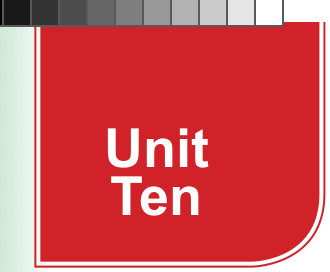
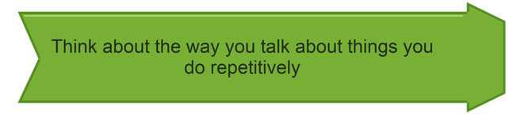

Unit Ten
My daily routines
Introduction
Routines are the normal orders of the things we do regularly. In this unit, you will learn to talk about routine activities and prepare a schedule for your daily routines. The competencies developed will enable you to describe daily routines and understand the importance of time management, organisation, and establishing regular habits.

Think about the way you talk about things you do repetitively